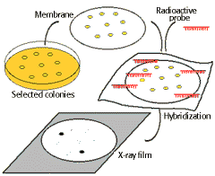

Recombinant DNA Technology Problem Set
Problem 5: Recombinant DNA 3
Tutorial to help answer the question
| Which of the following is not part of the normal process of cloning recombinant DNA in bacteria? |
A. restriction endonuclease digestion of cellular and plasmid DNAs. B. production of recombinant DNA using DNA ligase and a mixture of digested cellular and plasmid DNAs. C. separation of recombinant DNAs by electrophoresis using the Southern technique to determine where the desired recombinant migrates. D. transformation of bacteria by the recombinant DNA plasmids and selection using ampicillin. E. probing blots of bacteria clones with radioactive DNA complementary to the desired gene.
Tutorial
Creating recombinant DNA
|
A plasmid vector is digested with EcoRI at a single site to produce two sticky ends.
A sample of human DNA is also digested with EcoRI to produce pieces with the same sticky ends. Human DNA or cDNA copied from mRNA using reverse transcriptase from retroviruses. The two samples are mixed and allowed to hybridize, some molecules will form with pieces of human DNA inserted into the plasmid vector at the EcoRI site. DNA ligase is used to covalently link the fragments. |

|
Transformation-incorporating the recombinant plasmid into a bacteria
Selecting transgenic cells resistant to antibiotic
|
Plasmid vector contains an ampicillin resistance gene making the cell resistant.
Growth of transformed cells (cells receiving the plasmid) can be identified on agar medium containing (e.g.) ampicillin. |
|
Insertional mutagenesis identifies plasmids with DNA inserts
|
Identifying clones
The plasmid vector contains another identifiable gene (e.g., a second drug resistance or an enzyme activity), with the coding sequence of this gene containing the restriction site for insertion. Insertion of the foreign DNA at this site interrupts the reading frame of the gene and result in insertional mutagenesis. In the example shown below, the β-galactosidase gene is inactivated. The substrate "X-gal" turns blue if the gene is intact, i.e. makes active enzyme. White colonies in X-gal imply the presence of recombinant DNA in the plasmid. |


|
Finding clones containing the appropriate gene
| In the following scheme, bacterial containing recombinant plasmids are grown as clones. The clones are blot transferred to a membrane sheet, and the DNA present denatured and fixed onto the surface. Adding a radioactive "probe" or complementary fragment and allowing the DNA to hybridize followed by exposure to X-ray film identifies the clone containing recombinant DNA with the correct insert. |  |


University of Arizona
Tuesday, October 29, 1996
Contact the Development Team
http://biology.arizona.edu
All contents copyright © 1996. All rights reserved.